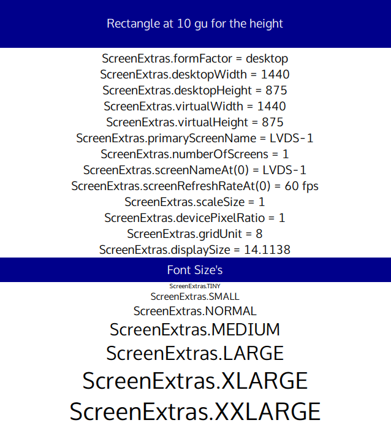

QmlScreenExtras - Gather Info about screens and set propertys

This example project demonstrates How to use ScreenExtras form factor, Setup grid units and set fonts based on its built in enums
Running the Example
To run the example from Qt Creator Manual, open the Welcome mode and select the example from Examples. For more information, visit Qt Creator: Building and Running an Example.
Files: